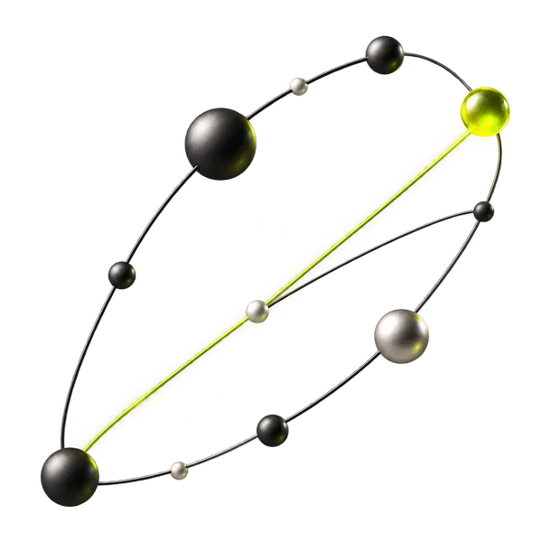
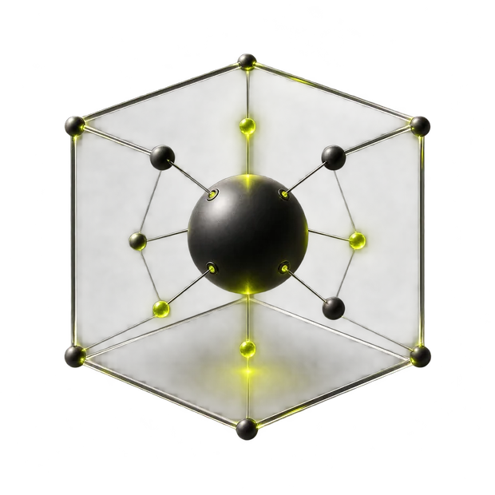
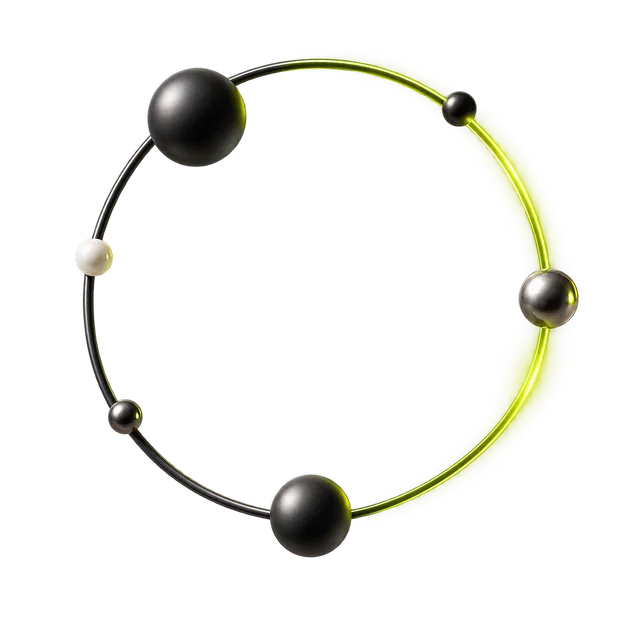
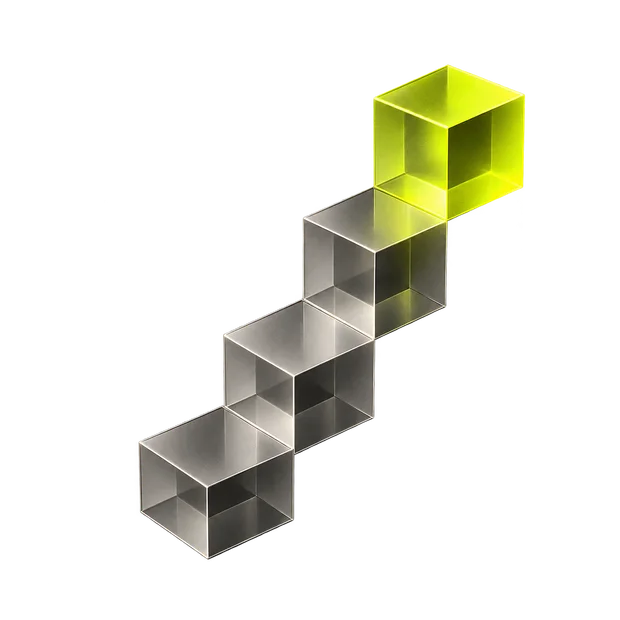
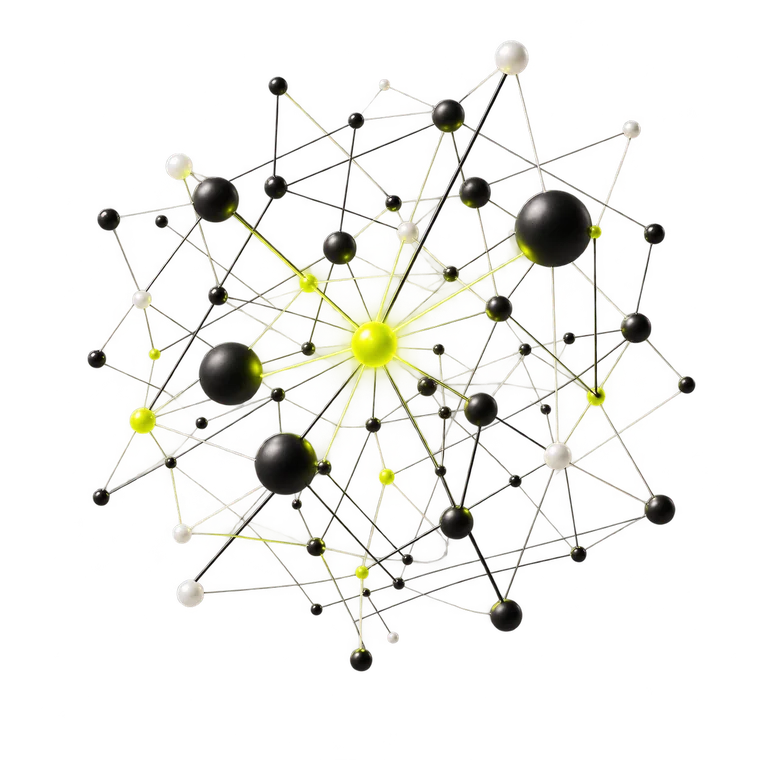

Frame the problem
The decision or workflow, who it serves, the environment it runs in, the constraints that bind it, the evidence already available, and the measure that will say it worked.
S0 / Intelligence systems
We build intelligence systems that turn evidence into knowledge and help people decide and act with greater autonomy.
Products, pilots, and applied AI to improve operations and advance science.
Products / Systems / Pilots / Consulting
How we work
S0 is the initial state: a real problem, a real environment, and nothing built for it yet. Each state after it adds capability that has already been tested against reality.
S0→S1→S2→S3→…
The decision or workflow, who it serves, the environment it runs in, the constraints that bind it, the evidence already available, and the measure that will say it worked.
The problem selects the representation and the technique: solvers and control for constrained operations, learned policies where feedback is measurable, simulation where scenarios must be tested before they matter, specialized and foundation models where the signal is language, images, or unstructured evidence.
An execution harness defines what the system may observe and do: tools and data, permissions, approvals where consequence demands them, verification of each step, recovery when a step fails, and durable state across long-running work.
Historical replay, counterfactual comparison, simulation, adversarial and failure-mode tests, and an honest baseline: the way the work is done today. Evaluation is part of the architecture, and it decides how much the system is trusted to do.
Decisions, actions, results, interventions, and failures are kept as evidence. That record improves policies, evaluations, and interfaces — and becomes knowledge your team can reuse long after the first deployment.
What we build

01 / DecideProducts and systems that improve a recurring decision under real constraints, with results you can measure against the way that decision is made today.
Pricing / allocation / scheduling / logistics / energy / planning / operational control

02 / OperateSystems that coordinate tools, workflows, data, and approvals across long-running work. They verify progress, recover from failure, and keep people in command of what matters.
Tool use / workflow coordination / approvals / verification / recovery / long-horizon execution

03 / DiscoverSystems that help technical teams evaluate, simulate, run experiments, investigate software, and orchestrate research with a clear record of what was tried and what it showed.
Evaluation / simulation / experimentation / software investigation / research orchestration

04 / AdviseA focused engagement to select the opportunity, frame the problem, design the architecture, choose the technology and models, define the evaluation, build a production pilot, and improve it from real outcomes.
Opportunity selection / problem framing / architecture / model selection / evaluation design / production pilots
Why Szero
We start from the decision, the environment it lives in, the constraints that bind it, and the outcome worth improving. That analysis chooses the methods — usually several, working together.
We are engineers and applied researchers, and we build the whole system: the method that decides, the software that acts, the evaluation that earns trust. We stay accountable to the outcome it produces.

Principles
People set the objective and stay in command of the system. Autonomy exists to carry their intent further than they could reach by hand.
Realistic tasks, failure modes, and an honest baseline come before anyone depends on a system.
Evaluation is designed with the system, runs continuously, and decides how much authority the system holds.
Permissions, limits, approvals, and escalation match the consequence of the action being taken.
What happens after the system acts is the signal we trust most, and the one we design to capture.
Delegate decisions. Never delegate intent.
Company / Szero
Szero is an applied intelligence company. We build the complete system around a decision: how it is framed, the method that decides, the software that acts, the evaluation that earns trust, and the loop that makes the next decision better.
Our purpose is to help people and machines make better decisions, expand human agency, and accelerate scientific progress.
Manifesto / From S0
Every capable system was once a blank state. S0 is a problem worth solving with nothing built for it yet. Everything after S0 is earned: a method chosen, a system connected, an evaluation passed, an outcome learned from.
S0→S1→S2→S3→…
Human intent sets the direction. The system carries it further than one person could reach alone, and gives back what it learned as knowledge the whole team can use.
Frame.
Decide.
Act.
Verify.
Learn.
Work with Szero
Tell us about a decision, an operation, or a technical challenge worth improving. We will tell you what we would build, how we would evaluate it, and where to start.
Contact Szero / hello@szero.ioA useful first message tells us: